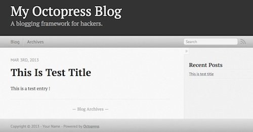

静的サイトジェネレータ『Octopress』の使い方
前回のおさらい
前回、Githubブログの入門をしたので、今回は早速Octopressの使い方を紹介しようと思います。
Githubには静的ファイル (html, js, css, png...)しかアップロード出来ないので、ツールで工夫する必要があるということでした。
前提として、Gitは理解しているという仮定で説明しますので、分からない人は後から勉強してみてください。
Octopressのインストール
OSごとに違いますので、下のボタンからどれかをクリックして下さい。
Windowsの場合
Windowsの場合は、
- 軽量LinuxをVMWareにインストールする
- Cygwinをインストールする （上級者向け: 失敗した場合に対応できる技術が必要）
のどちらかがおすすめです。というのも、Windowsはオープンソースとの相性が悪いので標準のコマンドプロンプトでは困ることが多くなるからです。
Linuxをインストールする場合
もし後者を選ぶとすれば、LinuxディストリビューションはCrunchBang Linuxをおすすめします。
ChrunchBangは非常に軽量なUbuntuベースのLinuxなので、VM上でも軽快に動くと思います。
ファイルサイズは、CrunchBangは750MB前後です。
インストールが終わったらLinuxの章を参照して下さい。
Cygwinをインストールする場合
まず、http://www.sw.it.aoyama.ac.jp/2011/CP1/cygwin/ のインストール方法を見ながらインストールします。
事前にパッケージをインストールする画面になったら、
- subversion
- git
- ruby (apt-cygでのインストールが失敗した場合)
- mingw-gcc
- make
- wget
は必ずインストールしてください。（もし忘れたり間違えた場合は、最初にダウンロードした setup-x86.exe をもう一度起動すればOKです。）
次にapt-cygをインストールしてください。
インストールするには、Cygwinで次のように入力してください。
svn --force export http://apt-cyg.googlecode.com/svn/trunk/ /bin/
chmod +x /bin/apt-cygこれでaptやyumというパッケージが使えるので、Ubuntuとほとんど同じ環境になりました。
あとはLinuxの章を参照して下さい。
Mac OS Xの場合
以下の作業はターミナルを開いて入力して下さい。
Homebrewのインストール
まず、Homebrewをインストールします。（既に入れている場合は飛ばして下さい）
ruby -e "$(curl -fsSL https://raw.github.com/Homebrew/homebrew/go/install)"一応アップデートします。
brew update今後のために、brewでインストールしたコマンドを利用できるようにPATHの最初に追加します。
echo "PATH=/usr/local/bin:$PATH" >> ~/.bash_profile
source ~/.bash_profileRuby1.9.3のインストール
次にrbenvをインストールします。
brew install rbenvRubyをrbenvでインストールできるようにruby-buildをインストールします。
brew install ruby-buildRuby1.9.3をインストールします。
rbenv install 1.9.3-p484Rubyをrbenvで管理するために、PATHに登録します。
rbenv rehash
echo "PATH=~/.rbenv/shims:$PATH" >> ~/.bash_profile
source ~/.bash_profileRubyをインストールしたものに切り替えます。
rbenv global 1.9.3-p484Gitのインストール
もし、以下を実行して何も表示されない場合はインストールしてください。
which gitbrewでGitをインストールするには以下を入力します。
brew install gitOctopressのインストール
テーマの管理などのために、bundleというコマンドもインストールしておきます。
以下の (SITENAME) は、あなたの作る予定のサイト名に置き換えて下さい。
git clone git://github.com/imathis/octopress.git (SITENAME)
cd (SITENAME)
gem install bundler
bundle install
rake install以上で完了です。
Linuxの場合
Linuxはかなりの種類があるので、ここではUbuntu（Cygwin含む）のみ解説します。
以下の作業は端末（ターミナル）もしくはCygwinを管理者権限で開いて行って下さい。
apt-getを更新
rbenvが入っていないバージョンもあるので、最初に更新します。
# Cygwin
apt-cyg update
# Ubuntu
sudo apt-get updateRubyのインストール
更新したら早速インストールします。
# Cygwin
git clone git://github.com/sstephenson/rbenv.git ~/.rbenv
echo 'export PATH="$HOME/.rbenv/bin:$PATH"' >> ~/.bash_profile
echo 'eval "$(rbenv init -)"' >> ~/.bash_profile
source ~/.bash_profile
# Ubuntu
sudo apt-get install rbenvRubyをrbenvでインストールできるようにruby-buildをインストールします。
# Cygwin
git clone git://github.com/sstephenson/ruby-build.git ~/.rbenv/plugins/rucby-build
# Ubuntu
sudo apt-get install ruby-buildRuby1.9.3をインストールします。
# Cygwin
rbenv install 1.9.3-p484
# Ubuntu
rbenv install 1.9.3-p194Rubyをrbenvで管理するために、PATHに登録します。
# Cygwin
rbenv rehash
echo "PATH=~/.rbenv/shims:$PATH" >> ~/.bash_profile
source ~/.bash_profile
# Ubuntu
rbenv rehash
echo "PATH=~/.rbenv/shims:$PATH" >> ~/.bash_profile
source ~/.bash_profileRubyをインストールしたものに切り替えます。
# Cygwin
rbenv global 1.9.3-p484
# Ubuntu
rbenv global 1.9.3-p194Gitのインストール（Ubuntuのみ）
もし、以下を実行して何も表示されない場合はインストールしてください。
# Ubuntuのみ
which gitGitをインストールするには以下を入力します。
# Ubuntuのみ
sudo apt-get install gitOctopressのインストール
テーマの管理などのために、bundleというコマンドもインストールしておきます。
以下の最終行の octopress は、あなたの作る予定のサイト名に置き換えて下さい。
# Cygwin,Ubuntu共通
git clone git://github.com/imathis/octopress.git octopress
cd octopress
sudo apt-get install bundler # Linuxではruby-bundlerと競合する時があるため
gem install bundler
bundle install
rake install以上で完了です。お疲れ様でした。
使い方

インストールさえ出来ればあとは簡単です。
ちなみに、先ほどインストールしたoctpressのフォルダが作業用フォルダになるので、消さないで下さい。
逆に言えば、新しいブログを作る場合もバックアップするときも、まるっとコピーして使えます。
記事を書く前の準備
まず、これ以降の作業は"octopress（あなたのサイト名）"というフォルダにいる状態でないと出来ません。
自分のいる場所は
pwdで確認でき、
cd /path/you/want/to/goで移動できます。
cd ..で一つ上のフォルダに移動できます。
記事の作成
rake 'new_post[title]'例えば、「すごい記事を考えた」としたい場合は、
rake 'new_post[すごい記事を考えた]'という風になります。
このコマンドでファイルが出来るので、あとは自分の好きなエディタで編集して下さい。これが醍醐味ですね。（blog for hackersという所以はここかも？）
記述言語はMarkdownです。
記事のプレビュー
rake previewhttp://localhost:4000/ でプレビューが表示されます。
こういったツールの利点は、プレビュー ＝ 本番そのもの なので、ローカルPCで思う存分編集できますね。
それもオフラインで。
静的ファイルの生成
rake generateこのコマンドでMarkdown + LiquidのサイトがHtmlの普通の静的ファイルに早変わりします。
デプロイ
rake deployこれで必要なファイルが集まるんだそうです。あまりOctopressは詳しくないので詳細はわかりませんが、要するにデプロイの準備が整ったということみたいです。
ちなみに設定ファイルでデプロイの設定が出来るので、すぐにGithubにプッシュ（アップロード）することもできます。
とりあえず最初の入門としてはこれだけのコマンドでどうにかなります。
詳しく知りたい人は
もっと詳しく知りたい場合は、
などを参照してください。
まとめ
ちょっと最後が締まりませんでしたが、今回は一番戸惑いやすいインストールにページを割いてみました。
インストールさえ終わればあとは検索でいろんな情報が出てきますので、是非Octopressライフを楽しんでくださいね。

アスキー・メディアワークス
売り上げランキング: 23,879